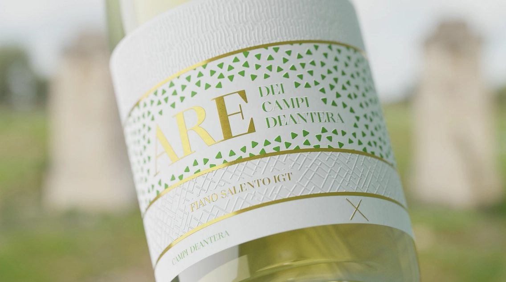
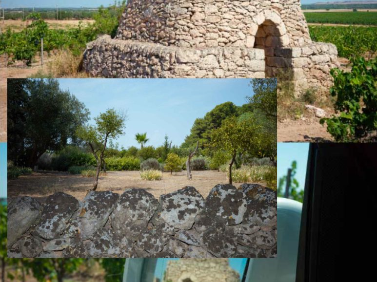
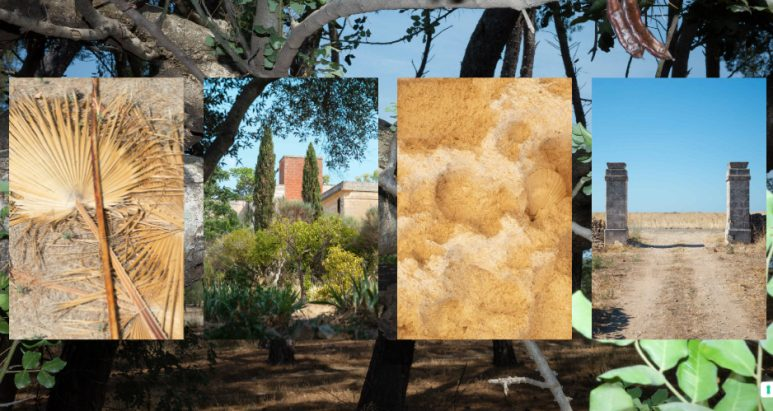
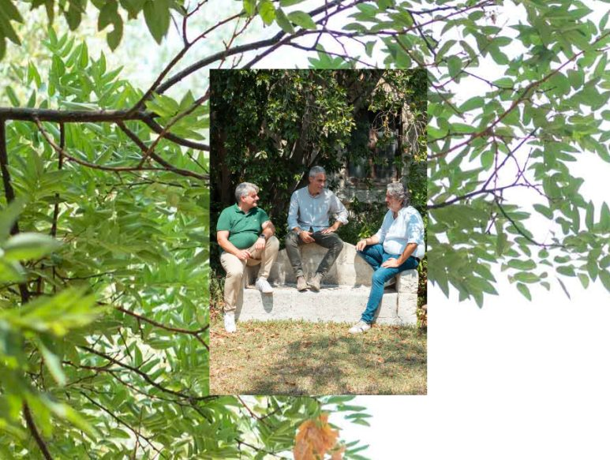
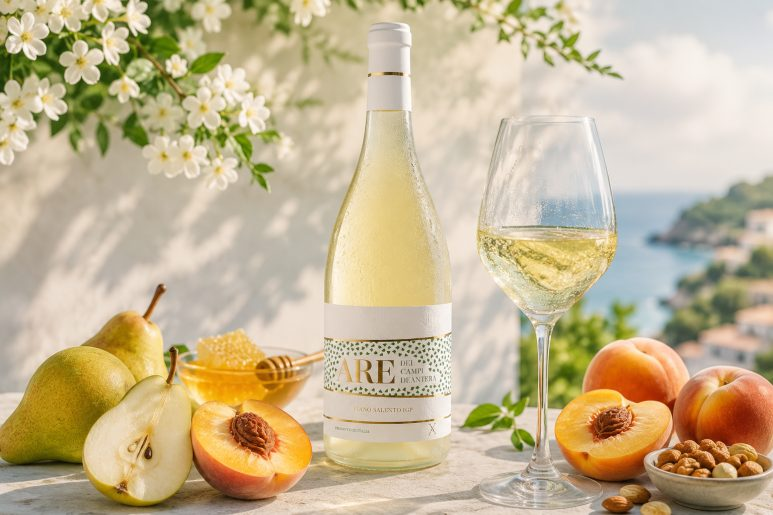
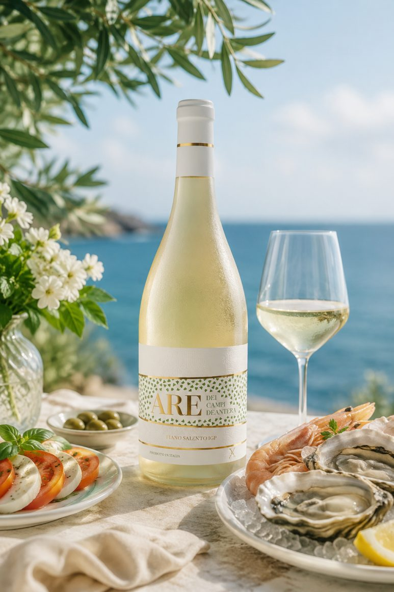

이탈리아 품종 탐구 캄피 데안테라 아레 피아노
여름이 깊어질수록 청량하고 시원한 한 잔이 더욱 간절해지는 계절입니다. 무더운 열기를 식혀줄 최고의 와인을 기다리셨던 분들께 아주 기쁜 소식을 전해드려요. 매년 이맘때면 어김없이 찾으시는 분들이 많아, 올해도 발 빠르게 다시 입고된 여름의 정석, 캄피 데안테라 아레 피아노입니다. 작년 여름에 이 와인을 경험하셨던 분들도, 올해 처음 만나시는 분들도 모두 시원한 여름의 맛을 제대로 느끼실 수 있을 거예요.
여름이 깊어질수록 청량하고 시원한 한 잔이 더욱 간절해지는 계절입니다. 무더운 열기를 식혀줄 최고의 와인을 기다리셨던 분들께 아주 기쁜 소식을 전해드려요. 매년 이맘때면 어김없이 찾으시는 분들이 많아, 올해도 발 빠르게 다시 입고된 여름의 정석, 캄피 데안테라 아레 피아노입니다. 작년 여름에 이 와인을 경험하셨던 분들도, 올해 처음 만나시는 분들도 모두 시원한 여름의 맛을 제대로 느끼실 수 있을 거예요.

이 와인이 왜 여름만 되면 그렇게 인기가 많은지, 그리고 우리가 왜 이탈리아의 수많은 품종을 탐구하는 일을 멈출 수 없는지 그 매력을 하나씩 풀어볼게요.
PART 1. 피아노(Fiano), 여름 와인으로 사랑받는 이유
이탈리아 남부 캄파니아 지역이 고향인 피아노 품종은 사실 여름을 위해 태어났다고 해도 과언이 아니에요. 많은 분이 여름 와인 하면 그저 가볍고 산미만 높은 와인을 떠올리곤 하시는데, 피아노는 조금 특별합니다.
피아노는 기분 좋은 산도를 갖추고 있으면서도 입안에서 느껴지는 질감이 아주 매력적이에요. 너무 묽거나 밍밍하지 않고, 마치 잘 익은 과일의 속살을 베어 문 듯한 적당한 무게감과 쫀득함이 느껴지거든요. 이 질감이 덥고 습한 여름날, 차갑게 칠링된 상태로 잔에 따르면 입안에서 정말 기분 좋게 굴러다닙니다.
특히 피아노는 열대 과일의 화사한 향과 함께 흰 꽃의 은은한 아로마가 어우러지는데, 이 향기가 덥다고 지친 몸과 마음을 정화해 주는 느낌을 줘요. 산도가 쨍하고 날카로운 스타일이 아니라 부드럽게 감싸 안는 느낌이라, 무더위에 예민해진 미각을 편안하게 다독여주는 역할을 합니다. 그래서인지 여름에 야외 테라스에서나 시원한 에어컨 바람 아래에서 한 잔 마시면, 그 자체로 완벽한 휴식이 되는 와인이죠.
PART 2. 이탈리아 와인의 무한한 세계, 왜 탐구하는 재미가 있을까요?
와인을 좋아하게 되면 자연스럽게 이탈리아로 눈을 돌리게 되는 이유는 아마도 그 방대함 때문일 거예요. 이탈리아는 전 세계에서 가장 다양한 포도 품종이 자라는 나라로 손꼽힙니다. 등록된 품종만 수천 가지에 이르니, 평생을 마셔도 새로운 맛을 찾아낼 수 있는 거대한 보물창고와도 같아요.

우리가 왜 이렇게 이탈리아의 낯선 품종들을 하나하나 알아가는 과정을 즐길까요? 그것은 마치 잘 알려지지 않은 여행지를 찾아다니는 모험과 비슷하기 때문입니다. 카베르네 소비뇽이나 샤도네이처럼 전 세계 어디서나 만날 수 있는 품종이 주는 편안함도 좋지만, 캄파니아의 피아노, 시칠리아의 그릴로, 혹은 이름조차 생소한 토착 품종들을 만날 때마다 우리는 그 지역의 바람과 햇살, 그리고 그 땅을 일궈온 사람들의 문화를 함께 마시는 기분이 들거든요.

오늘 소개해 드리는 아레 피아노 역시 마찬가지예요. 단순히 맛있는 화이트 와인을 마시는 것을 넘어, 이탈리아 남부의 어느 언덕에서 불어오는 바람을 잔 속에 담아보는 것과 같죠. 이렇게 매번 새로운 품종을 찾아내고 그 특징을 알아가는 과정이 쌓이다 보면, 어느새 나만의 와인 취향이 아주 깊고 단단하게 완성된 것을 발견하게 될 거예요. 새로운 맛을 발견하는 그 즐거움이야말로 와인 애호가들이 이탈리아 와인을 결코 포기할 수 없는 이유랍니다.

PART 3. 테크니컬 데이터
종류 : 화이트 와인
용량 : 750ml
알코올 도수 : 12.5% 내외
국가 및 생산 지역 : 이탈리아 > 캄파니아
포도 품종 : 피아노 (Fiano) 100%
캄피 데안테라 아레 피아노의 와인 스타일 지표를 살펴보면 드라이한 마무리가 아주 인상적입니다. 잔당감이 남지 않아 입안이 깔끔하게 정돈되는 스타일이며, 바디감은 미디엄 수준으로 너무 가볍지도 너무 무겁지도 않은 딱 좋은 밸런스를 유지해요.
산도는 침샘을 기분 좋게 자극하는 수준으로, 무더운 여름날 땀을 흘리고 난 뒤의 갈증을 해소해 줄 만큼 활기차고 신선합니다. 알코올 도수 역시 너무 낮지 않아 와인 자체의 풍미를 충분히 지탱해주면서도, 차갑게 칠링했을 때 밸런스가 가장 완벽하게 살아나는 온도를 자랑합니다.
PART 4. 테이스팅 노트와 여름철 푸드 페어링
아주 시원하게 칠링을 마친 아레 피아노를 투명한 잔에 조심스럽게 채우면, 맑은 연둣빛과 밝은 황금빛이 도는 아름다운 컬러를 볼 수 있습니다. 잔을 가볍게 돌려 코를 가까이 대면, 첫인상으로 싱그러운 배와 복숭아의 달콤한 과일 향이 먼저 기분 좋게 반겨줍니다. 이어서 은은하게 꿀 향과 볶은 견과류의 고소한 향이 뒤따라오는데, 이것이 피아노 품종 특유의 복합적인 매력이에요.

입안에 머금었을 때는 맑고 깨끗한 산미와 함께 입안을 가득 채우는 부드러운 질감이 느껴집니다. 앞서 말씀드린 대로 쫀득한 질감이 느껴져서 마시는 내내 입안이 심심하지 않고 아주 즐거워요. 목 넘김 이후에는 마치 바닷바람이 훑고 지나간 듯한 은은한 짠맛(미네랄리티)이 여운으로 길게 남는데, 이 느낌이 여름 와인으로서의 정점을 찍어줍니다.
음식 매칭도 여름답게 가볍고 신선하게 즐겨보세요. 무더운 날씨에 입맛을 잃었다면 갓 잡은 신선한 해산물 요리가 가장 좋습니다. 레몬을 살짝 뿌린 가리비 구이나 새우 샐러드, 혹은 깔끔한 흰 살 생선 회와 곁들이면 최고의 궁합을 보여줍니다. 여름철에 즐겨 먹는 차가운 토마토 파스타나, 신선한 모짜렐라 치즈와 토마토가 들어간 카프레제 샐러드와도 아주 훌륭하게 어울려요.

꼭 거창한 요리가 아니더라도, 퇴근길에 사 온 신선한 과일이나 가벼운 치즈 한 조각만 곁들여도 충분합니다. 시원하게 칠링된 아레 피아노 한 잔이면 더위로 지쳤던 하루가 마법처럼 리프레시되는 경험을 하실 수 있을 거예요. 올여름, 아직 인생 화이트 와인을 만나지 못하셨다면, 이탈리아의 보석 같은 품종 피아노의 매력에 푹 빠져보시는 건 어떨까요? 여름날의 더위를 잊게 해줄 완벽한 파트너가 되어줄 것입니다.
이 글은 땡큐와인 네이버 블로그에 먼저 올린 글이에요.